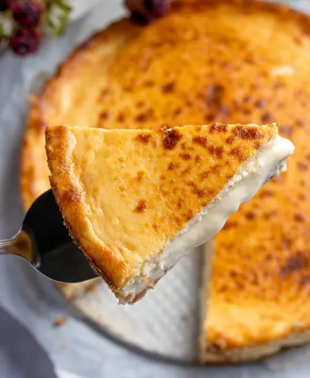

Cheesecake

Description
The best Cheesecake from Spain with mascarpone (original recipe)
Oh, the cheesecake. Pherhaps, the best desert from them all. Everyone loves it. That flavor, that smell. Damn.
Here we will learn how it's done. Enjoy!
Ingredients
- 100g of butter
- 200g of Marie biscuit or similar
- 220g of brown sugar
- 80g of President semi-cured cheese or similar
- 350g of Philadelphia cream cheese or similar
- 150g of Mascarpone cheese
- 3 eggs and 2 yolks
- 300g of whipping cream
- 5g of salt
Steps
- Crush the cookies and mix them with melted butter. Put it in the bottom of the container that we are going to use and let it cool in the refrigerator.
- Preheat the oven to 180°C (356°F), while you're doing the recipe.
- Mix all the cheeses until there is a uniform mixture.
- Add the sugar and beat it until there are no lumps.
- By hand, with a whisk we mix the eggs in the mixture.
- Last but not least, put the cream and mix it (don't beat it, or whip the cream).
- Put the butter on the edges of the mold.
- Put the mixture in the container (should be 3/4 of the mold).
- Bake at 180°C for 30 minutes. Remove it and let it cool at room temperature until cold or set.
HOME PAGE